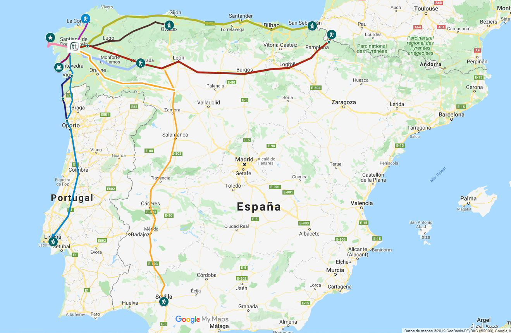

Peregrinacion

El Camino de Santiago no es solo una ruta, sino todo un sistema de rutas: caminos hay para dar y repartir. Varios caminos y rutas conducen a través de Europa y unen Francia y España en algunas rutas principales muy conocidas, entre ellas el Camino Francés.Hasta llegar al destino del peregrino, Santiago de Compostela, el Camino Francés adentra a los peregrinos en la naturaleza y en las ciudades más bellas de Francia y España durante 5 semanas aproximadamente.
La historia de la peregrinación a Santiago de Compostela se remonta a hace más de 1000 años, con el descubrimiento de la Tumba de Santiago el Mayor durante el reinado de Alfonso II (792-842). Santiago ya era considerado el gran evangelista de España y durante cientos de años había habido tradiciones de estudio y literarias que ofrecían fundamento a dicha creencia. El descubrimiento de la Tumba de Santiago provoca que la ciudad se convierta en destino de peregrinación. Los siglos X y XI muestran un creciente número de peregrinos, pero es en el siglo XII, bajo la enérgica promoción del Arzobispo Diego Gelmírez (1100-1140), cuando Santiago se convierte en meta de peregrinación cristiana al mismo nivel que Roma y Jerusalén. La primera Catedral se construye sobre la Tumba de Santiago el Mayor y gradualmente nace una ciudad a su alrededor, al igual que ocurre en la ruta de peregrinación, en donde se establecen casas de acogida, como por ejemplo los monjes de Cluny en Burgundy y de Aurillac en Cantal, Francia.
Los siglos XII y XIII se consideran tradicionalmente como la época dorada de la peregrinación a Santiago. Con el Renacimiento y la Reforma en Europa se vive un descenso de la peregrinación, pero de todas formas nunca desaparece por completo. En el año 1884, como resultado de un trabajo académico y de investigación científica, el Papa León XIII promulga la Bula “Deus Omnipotens”, con la que proclama al mundo entero que las reliquias de Santiago son auténticas. Esto constituye el comienzo del nuevo auge de la peregrinación en la época moderna.
Se creyó, en un principio, que en el siglo XX los medios de transporte podrían llevar a un decaimiento de la peregrinación tradicional a pie y a caballo. Éste no fue el caso y, por el contrario, durante los últimos 30 años se desarrolla un creciente interés por el Camino de Santiago: las cifras de peregrinos llegados aumentan. El impulso definitivo para la peregrinación fueron las visitas a Compostela de los Papas; Juan Pablo II en 1982 y en 1989 con motivo de la Jornada Mundial de la Juventud, y Benedicto XVI en el Año Santo 2010. Y las estadísticas demuestran que el fenómeno de la peregrinación todavía sigue en aumento. En 1985 llegaron a Santiago 1.245 peregrinos. En el Año Santo 2010 obtuvieron su “Compostella” 272.703 peregrinos.
Famosos que han hecho el caminio de santiago
-Juan Pablo II
Juan Pablo II fue el primer papa en recorrer el Camino de Santiago, y lo hizo en dos ocasiones: una de ellas al completo en 1982 y otra de forma simbólica en 1989, caminando los últimos cien metros. En esa segunda visita, realizada con motivo de la IV Jornada Mundial de la Juventud, llegó a la Catedral de Santiago ataviado con la tradicional capa de peregrino.
-Stephen Hawking
El difunto científico británico Stephen Hawking recorrió de forma simbólica un pequeño tramo del Camino en 2008, año en el que se desplazó a Santiago para recibir el I Premio Fonseca.
-Angela Merkel
La canciller alemana Angela Merkel recorrió un pequeño tramo del Camino en 2014 acompañada del entonces presidente del Gobierno, Mariano Rajoy. En concreto, la política alemana recorrió un tramo de seis kilómetros desde O Pedrouzo, en O Pino.
-Rey Felipe VII
Los actuales monarcas, Felipe VI y Letizia, recorrieron un tramo del Camino de Santiago en 2010, cuando todavía eran príncipes. Su ruta arrancó en Lavacolla y concluyó dos horas y 10 kilómetros más tarde en la Praza do Obradoiro.
-David Bisbal y Miguel Induráin
El cantante David Bisbal y la leyenda del ciclismo Miguel Induráin hicieron juntos el Camino de Santiago, recorriendo en bicicleta sus 750 kilómetros acompañados también por Abraham Olano y Roberto Heras.